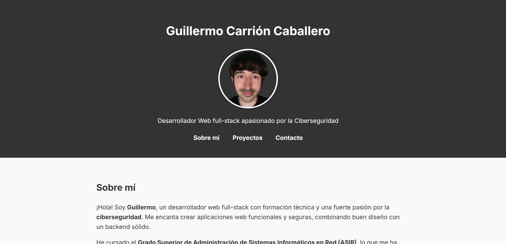

Proyectos
Portfolio Personal
Sitio web personal hecho con HTML, CSS y JavaScript puro. Incluye diseño responsive, modo oscuro y animaciones AOS.
Ver demo Ver códigoTo-Do App

Aplicación de tareas desarrollada en React. Usa hooks y localStorage para guardar las tareas.
Ver demo Ver códigoBlog con PHP

Blog dinámico hecho con PHP y MySQL. Permite login, publicación, comentarios y subida de imágenes.
Ver demo Ver códigoAPI REST de Usuarios

API RESTful desarrollada con Spring Boot. Permite CRUD completo de usuarios. Documentada con Swagger.
Swagger Ver códigoBlog Angular + API

Frontend hecho en Angular conectado a una API REST en Spring Boot. Permite leer, crear y editar artículos.
Ver demo Ver códigoTienda Online

Aplicación ecommerce usando Angular (o React) con Spring Boot como backend. Incluye carrito, registro y pedidos.
Ver demo Ver códigoMicroservicios (Opcional)

Arquitectura de microservicios con Spring Boot. Incluye Eureka, API Gateway y servicios independientes.
Ver demo Ver códigoContacto
Email: guillermocaballero001@gmail.com